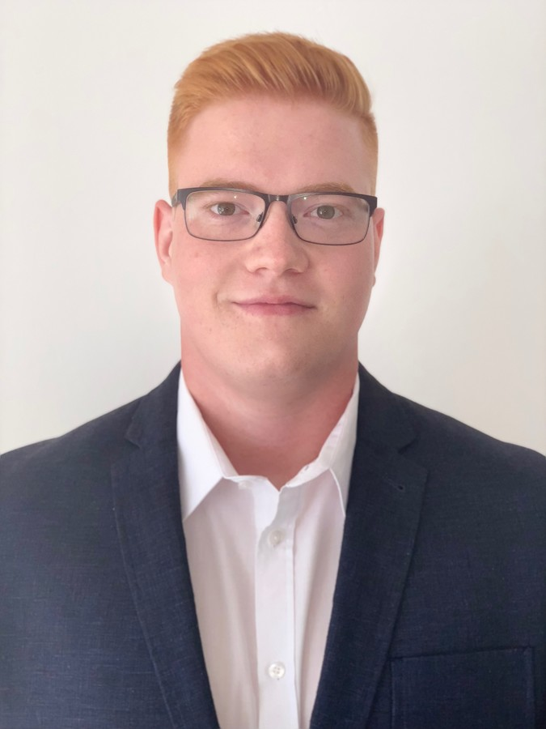

This is my story!

Little about myself:
- 29 years old
- From Ljubljana, Slovenia
- Love to play Tennis
BUT I also love Pizza.
Education:
- FRI
- Graduated from FRI in 2018
- 9/10
- Bachlor's:
A model for evaluation of customer relationship management systems
- GIMP - Gimnazija Jožeta Plečnika
Work Experience:
Plume Design
3 y 8 mos
- Team Captain Web and Mobile
1 year 9 mos
- Web QA Team Lead
1 y 3 mos
- Web QA
10 mos
AKKA
1 y 3 mos
- Stuttgart - Daimler TSS - UI/UX testing Mercedes Head Units (6 mos)
- Stuttgart - Porsche AG - UI testing Porsche service tablets (2 mos)
- Stuttgart - Continental - UI testing of E-bike motor software and service program (3 mos)
- Stuttgart - Daimler - UI testing of service tablets for Mercedes (Upgrade from 2.0 to 3.0) (2 mos)
- AKKA graduate softskills in Geneva (1 mos)
Comtrade
7 mos
- Junior Test Engineer
- Writing automation testing for airline ticketing system.
- Manual testing of Slovenian Govorment pay system.
Skills:
- Jira
- Testrail
- Team leadership
- Manual tetsing
- Bug reporting
- Bug tracking
- Decision making
- Mentoring
- Gatling
- Cucumber
- Programming skills - Loading...
Achievements:
- Certificate - ISTQB - Foundation level
- Certificate - ASQF - IoT Foundation level
- High school President